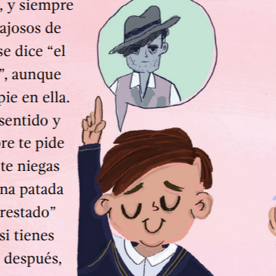
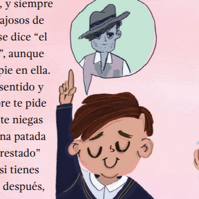

La autora Suemy Ramos Martínez de la mano de Crispimienta como ilustradora, han dado vida a este libro ganador del primer lugar del octavo curso de cuento infantil por la Universidad Autónoma del Estado de México. Con un estilo fresco de narración y una ilustración abrazadora, para quien guardamos con cariño el recuerdo de la ilustración tradicional de los libros de texto de la escuela primaria a los inicios de los 2000s; esta es un pieza única para el corazón tierno de un adulto nostálgico.
Estoy segura que, en algún momento y en todo lugar, siempre hemos querido ser un gángster. La rebeldía e irreverencia de un adulto que aún conserva a su niño interno, se ve reflejado en esta obra, en la que el anhelo y esperanza arde en un alma que busca sin parar la libertad y que espera, llegue aquel giro de emoción a su vida. Y sin embargo, si es que tarda en llegar ¡consigamoslo!
A la Facultad de Artes, a los maravillosos artistas que conocí y sus recomendaciones, son mi inspiración y los recuerdo con mucho cariño.